OpenEuler内核编译与替换实践
本文是 NIS2334 操作系统原理课程的实践实验报告，实验内容为在 Linux 系统上下载 OpenEuler 内核源码并进行编译与替换。通过本次实验，熟悉 Linux 的运行环境，掌握 Linux 内核编译的过程，了解 OpenEuler 内核，为后续自行修改内核代码并编译替换铺垫。
OpenEuler 是华为推动的一款开源操作系统。当前 OpenEuler 内核源于 Linux，支持鲲鹏及其它多种处理器，能够充分释放计算芯片的潜能，是由全球开源贡献者构建的高效、稳定、安全的开源操作系统，适用于数据库、大数据、云计算、人工智能等应用场景。同时， OpenEuler是一个面向全球的操作系统开源社区，通过社区合作，打造创新平台，构建支持多处理器架构、统一和开放的操作系统，推动软硬件应用生态繁荣发展。 更多信息可以参考其官方网站。
实验目的
- 熟悉 Linux 的运行环境；
- 掌握 Linux 内核编译的过程；
- 了解 OpenEuler 内核，能够编译替换不同版本的内核，为后续自行修改内核代码并编译替换铺垫。
实验要求
- 在 Linux 系统上，下载 OpenEuler 内核进行编译与替换。
实验环境
- 平台：Vmware Workstation 17 Pro
- 系统：Ubuntu 20.04.6 LTS
实验过程
- 安装和配置 Ubuntu 20.04.6 LTS 系统
- 安装 VScode（推荐），配置好 make、 gcc 等编译工具
- 用命令
uname -r查看原始内核版本 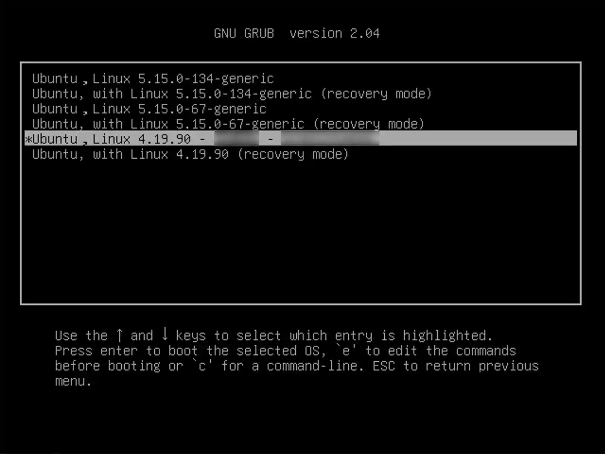
- 下载 OpenEuler 内核源码:
- 到 代码仓库 下载 OpenEuler 源码并解压
- 查看仓库代码内核版本 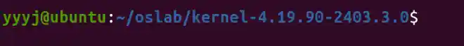
- 清理源代码树:
- 进入解压好的源码文件夹清理过去内核编译产生的文件，第一次编译时可不执行此命令。
1
make mrproper
- 进入解压好的源码文件夹清理过去内核编译产生的文件，第一次编译时可不执行此命令。
- 生成内核配置文件:
先将系统原配置文件复制到代码仓库文件夹下，原配置文件在/boot 目录下，利用
uname -r获取当前系统的内核版本。将配置在当前目录下保存为.config 文件1
cp -v /boot/config-$(uname -r) ./.config编译 Linux 内核需要安装 ncurses， Ubuntu 下对应包为 libncurses5-dev：
1
sudo apt install libncurses5-dev使用以下命令对配置进行需要的更改,根据提示需先安装相应的依赖，不同的包在不同 Linux 发行版下名称不同。
1
make menuconfig这一步遇到报错： 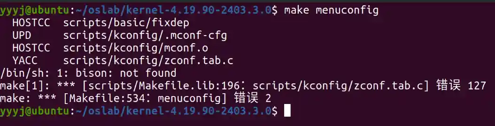
分析得缺少依赖bison和flex，安装后问题解决
1
sudo apt install bison flex
- 内核编译与安装
- 首先安装执行编译所需的组件， 包括 libelf-dev,openssl,libssl-dev,bc
1
sudo apt install libelf-dev openssl libssl-dev bc - 开始编译内核，使用
make -j8命令，其中-j8表示使用8个线程进行编译。- 编译过程碰到关于
canonical-certs.pem的报错，将生成的配置文件.config的CONFIG_SYSTEM_REVOCATION_KEYS="debian/canonical-revoked-certs.pem"注释掉。 - 进行下一步时发现安装模块失败 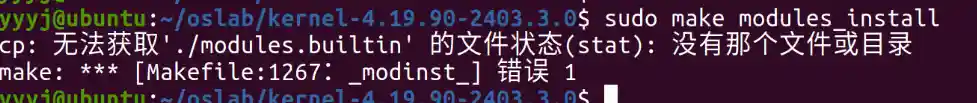
- 查看编译日志，发现报错 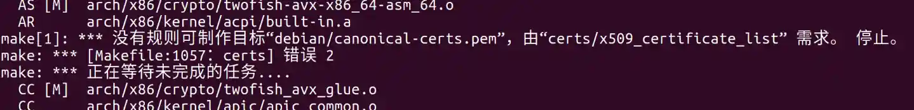
- 将.config文件中的
2CONFIG SYSTEM TRUSTED KEYS-"debian/canonical-certs.pem"注释掉，重新编译。 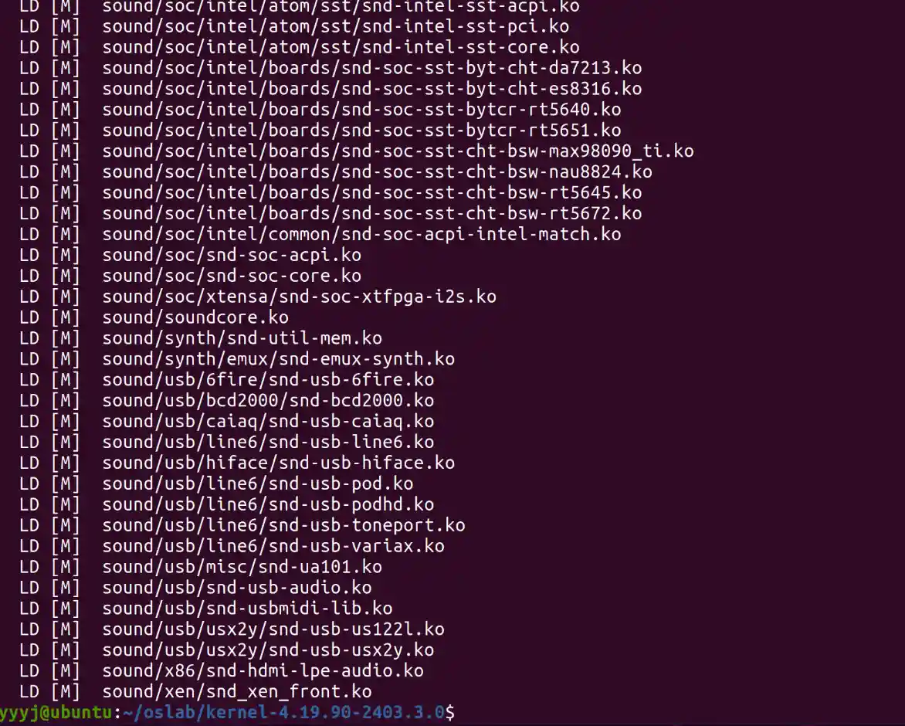
- 编译过程碰到关于
- 编译完成后安装模块和内核
1
2sudo make modules_install sudo make install - 完成安装，在 /boot 下看到新安装的内核 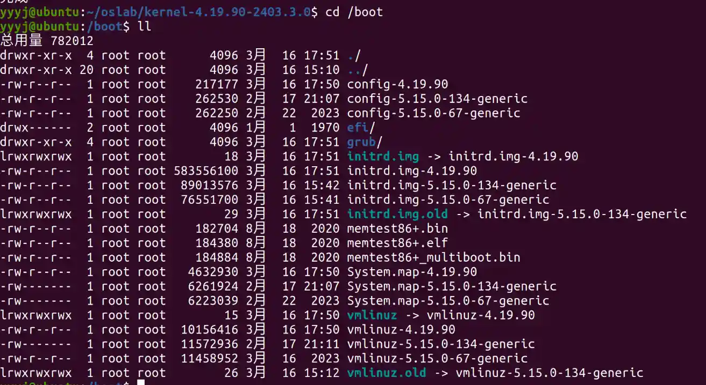
- 首先安装执行编译所需的组件， 包括 libelf-dev,openssl,libssl-dev,bc
- 更新引导文件
- 根据/etc/default/grub 目录下的内核文件自动更新启动引导文件
1
sudo update-grub - 修改/boot/grub/grub.cfg 中
menuentry后面的字符串，在安装的 OpenEuler 版本号后增加姓名学号，自定义启动菜单时的选项名称 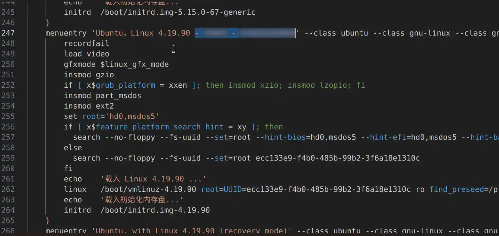 - 使用
reboot命令重启系统，按住shift键进入引导菜单，选择Ubuntu 的高级选项，选择新安装的内核版本启动系统。 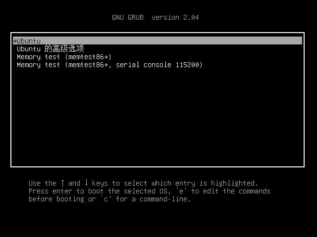 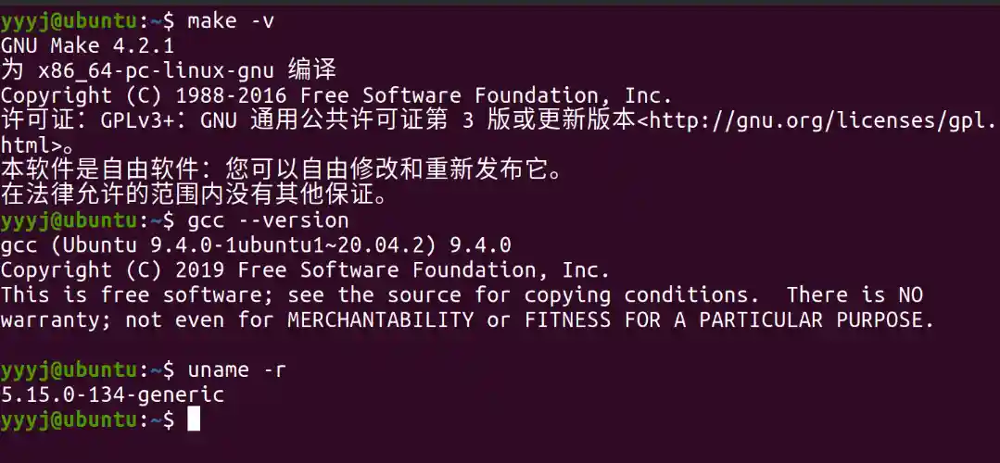 - 查看当前内核版本，为 4.19.90，说明成功安装 OpenEuler 内核！ 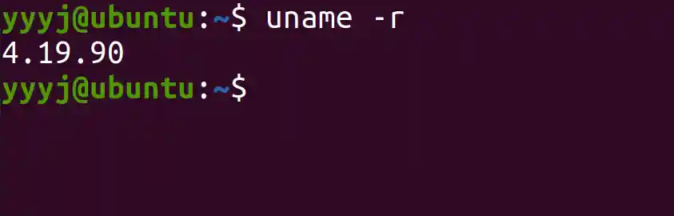
- 根据/etc/default/grub 目录下的内核文件自动更新启动引导文件
- 编译内核时遇到
debian/canonical-certs.pem问题，解决方法是注释掉.config文件中的CONFIG SYSTEM TRUSTED KEYS-"debian/canonical-certs.pem"。